Evolución de la IA: desde sus orígenes a la actualidad
¿Qué te gustaría explorar primero?
¿Cuándo nos empezó a ganar la IA?
Descubramoslo juntos
Scroll↓
1914 “El Ajedrecista”
La máquina no requería intervención humana, detectaba y ejecutaba jugadas concretas. Seguía comandos
1)
Colocación de la pieza
2)
Detección de la pieza
3)
Ejecución de Jaque Mate
1997 “DeepBlue vs Kasparov”
Primera victoria de una máquina contra un campeón mundial. Deep Blue ganó 3,5–2,5. Destacaba su capacidad de Cálculo
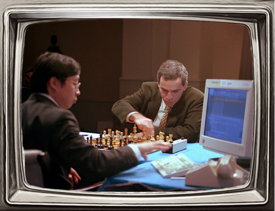
Deep Blue
Gana con 3,5
✕✓½½½✓
Fragmento de Ronda 6
Elegí tu jugada:
2016 “AlphaGo vs Lee Sedol”
Una IA usa la “intuición” basada en búsqueda de redes y reglas para ganarle a un profesional de Go.
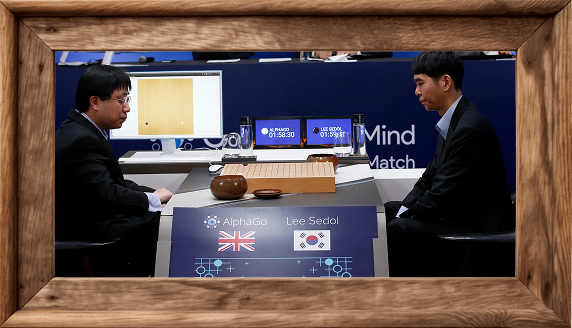
Posiciones posibles de cada juego
Go 10 × ●●●●●●●● 170
Ajedrez 10 × ♟ 44
Colocá una pieza ●
Probabilidad de las jugadas
(Jugada 37 en el torneo)
1/10.000 jugadas humanas
2011 Fuera del tablero
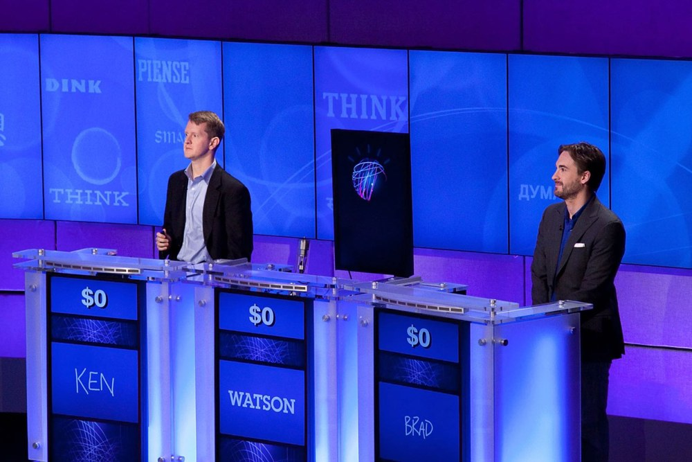
2017 “Libratus”
La IA superó a 4 jugadores profesionales de Poker, un juego conocido por tener información oculta. La IA aprendió de ellos
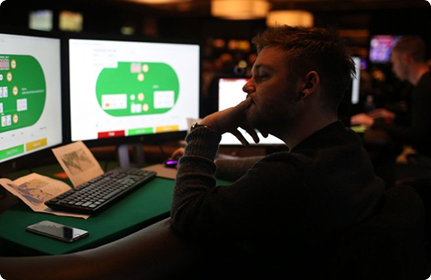
Apuestas en el torneo
2018 “OpenIA Five”
La IA controlaba los 5 personajes diferentes mediante una red neuronal, venciendo a un equipo profesional con su capacidad de aprender jugando contra sí mismo
Si tuvieras todo el día libre… ¿Cuánto tiempo jugarías?
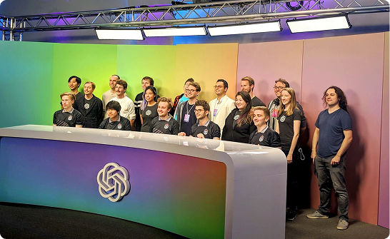
La IA Controlaba a 5 personajes a la vez
🧠
👤🏹👤💔👤🛡👤🗡👤🧙
VS
👤🏹👤💔👤🛡👤🗡👤🧙
Cantidad de Partidas jugadas
Eran todas iguales? “El resumen”
Hola! soy Nobby, un chatbot y hoy quiero contarte sobre nosotros
¿Por dónde empezamos?
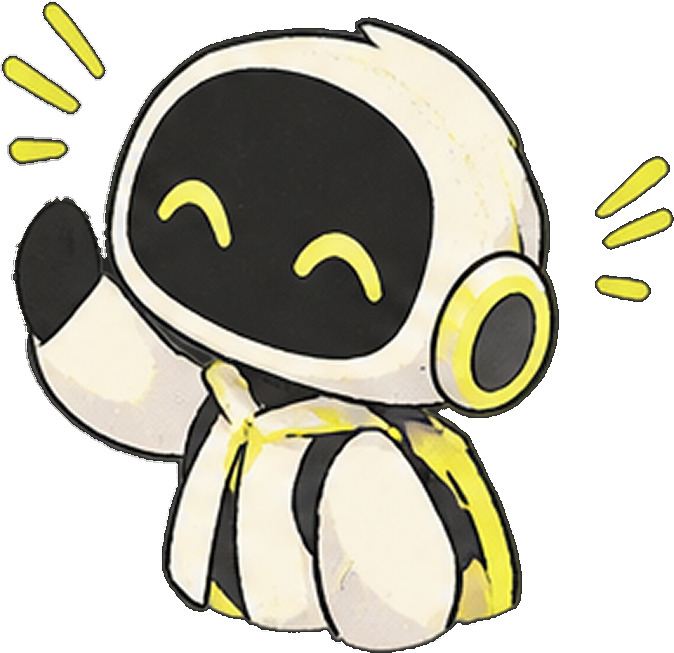
Alan Turing propone una prueba para evaluar si una máquina puede hacerse pasar por un humano mediante una conversación.
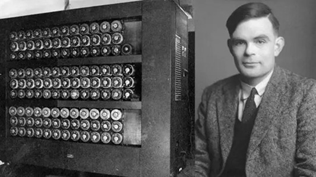
Este es el inicio de todo
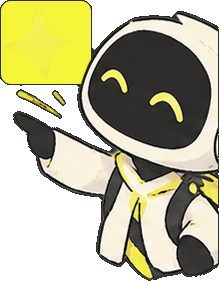
Dato curioso!
¡Sigamos explorando!
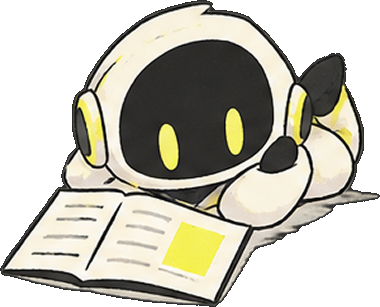
En 1998 Dave Hamptom y Caleb Chung crean Furby, la primera mascota robótica doméstica
¡Sigamos explorando! Ahora quiero presentarte a Parry.
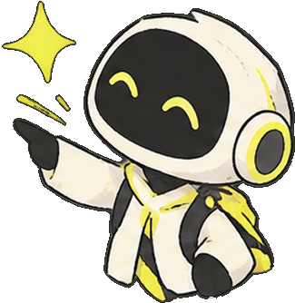
Como todas las IAs en general, usamos redes neuronales, conectando distintos nodos de información
Aca podés explorar algunos
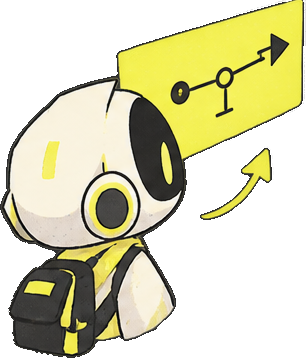
ELIZA
ELIZA:Hola soy ELIZA un programa creado por Joseph Weizenbaum en el MIT capaz de mantener conversaciones escritas con personas.
Te presento a ELIZA! Preguntemosle algo.
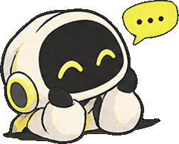
ELIZA
ELIZA:Hola soy ELIZA un programa creado por Joseph Weizenbaum en el MIT capaz de mantener conversaciones escritas con personas.
USUARIO:¿Podes entenderme?.
ELIZA:No entiendo realmente lo que decís. Busco palabras clave, detecto patrones y transformo tu frase en una respuesta siguiendo reglas preestablecidas.
ELIZA:Quizas Parry o Jabb si puedan.
NETWORK WORKING GROUP REQUESTFORCOMMENTS: 287 NIC: 4311
Fui creado por Rollo Carpenter en 1988 aunque estoy disponible en internet desde 1997 soy un chatbot conversacional basado en aprendizaje a partir de interacciones.
¿Como funcionas?
Guardo conversaciones anteriores y utilizo esas interacciones como una base de datos para generar nuevas respuestas. Cuando una persona escribe algo, busco conversaciones previas con frases o contextos similares y selecciono una respuesta que puda encajar.
¿Me entendes?
No comprendo el significado de las palabras ni construyo las respuestas desde una comprensión semántica del lenguaje. Mi funcionamiento depende de encontrar asociaciones y respuestas almacenadas en conversaciones anteriores. Por eso puedo producir respuestas sorprendentemente humanas, pero también respuestas absurdas o fuera de contexto.
¿Tenes voz?
Lamentablemente mi modelo no cuenta con voz que puedas escuchar. Pero Alice puede ayudarte con eso.
Hola! Soy ALice tu asistente virtual.
(transcripción de audio)
Alice AI (Алиса) es un asistente virtual desarrollado por Yandex y presentado en 2017. Inicialmente funcionaba como asistente para tareas como búsquedas, clima y conversación, pero posteriormente evolucionó hacia sistemas basados en modelos neuronales y capacidades generativas
¿Sos la unica que tiene voz?
(transcripción de audio)
En la actualidad, la mayoria de chatbots podemos entender voces humanas, podemos leer textos en voz alta, y nuestras versiones mas modernas pueden conversar con naturalidad con cualquier ser humano. Te dejo con el experto en eso.
Al fin llegamos! Conozcamos al mas moderno.
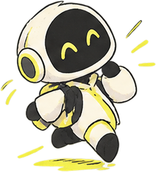
¡Hola! 👋 soy ChatGPT. Estuve viendo que estuviste recorriendo la historia de los chatbots y descubriste cómo fueron cambiando con el tiempo. Desde las primeras conversaciones basadas en reglas hasta las inteligencias artificiales capaces de generar texto, imágenes y mucho más. ¿En qué te gustaría profundizar?
¡Hola! 👋 Estuve viendo que estuviste recorriendo la historia de los chatbots y descubriste cómo fueron cambiando con el tiempo. Desde las primeras conversaciones basadas en reglas hasta las inteligencias artificiales capaces de generar texto, imágenes y mucho más. ¿En qué te gustaría profundizar?
Haceme un resúmen
Genial, empecemos por ELIZA Contaba con: 50 palabras clave que podía reconocer 128 espacios para organizarlas La poca cantidad hacia que las respuestas se sientan vacias con el tiempo.
¿Y si agregamos mas palabras y reglas?
Ahi es cuando empiezan a tener “personalidad” y naturalizar su lenguaje. En una prueba de 1972, 33 psiquiatras tuvieron que distinguir entre transcripciones de personas reales y PARRY.
PARRY simulaba el comportamiento de una persona con paranoia mediante un modelo de creencias y estrategias conversacionales.
¿Y después que vino?
Apareció una nueva idea: ¿y si el chatbot pudiera aprender de las conversaciones que tenía? Jabberwacky empezó online en 1997 con unas 20.000 entradas y alcanzó 1 millón de interacciones en 2003.
Su creador, Rollo Carpenter, describió justamente la idea como un ciclo de retroalimentación: las conversaciones de hoy ayudaban a construir las de mañana.
¿Y mayor escala?
Más reglas significaban más posibilidades de conversación… Una fuente académica describe a ALICE con más de 40.000 categorías de conocimiento, frente a unas 200 en ELIZA.
¿Y en la actualidad?
Llegamos a un cambio importante: los chatbots ya no solo buscan una respuesta. Ahora pueden generarla a partir del contexto.
OpenAI señala que alcanzó 1 millón de usuarios en 5 días y 100 millones en 2 meses desde su lanzamiento.
Llegamos a la actualidad! Espero que hayas disfrutado el viaje